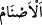

“Hatırla ki İbrâhim şöyle demişti:” İbrâhim’in (a.s.) Beytullah’ı inşâ ettikten sonraki
münâcâtında sarf ettiği şu sözleri hatırla: “Rabbim, bu şehri” Mekke şehrini
“emniyetli” ahâlîsi emniyet içinde bir şehir “kıl”, katil, yağma; alaca ve cüzzâm ve
benzeri nefreti mûcib hastalıklar gibi korku verici ve hoşa gitmeyen durumlardan halkı
endişeye düşmesin.
Emniyetli olmanın şehre isnâd edilmesi, mecâzdır. Çünkü emniyet onda meydana
gelir. Aslında emniyette olan şehir halkıdır.
“Beni ve oğullarımı putlara tapmaktan uzak tut.” yâni, içinde bulunduğumuz tevhîd
inancında, İslâm dîninde ve putlardan uzak durmada sâbit kıl. Bazıları der ki: İbrâhim
(a.s.) kavminin putlara taptığını görünce oğulları için endişe ederek böyle duâ etmiştir.
Fakir (Bursevî) der ki: “Cumhûr, Arapların Hz. İbrâhim devrinden itibaren Huzâa
kabilesi büyüğü Amr b. Luhay’a kadar İbrâhim (a.s.)’ın putlara tapmayı redde dayanan
dîni üzere yaşamaya devam ettiği kanâatindedir. İbrâhim (a.s.)’ın dînini ilk olarak
değiştiren ve Araplara birtakım sapıklıkları meşrû kılan bu adamdır. Bu adam, Kâbe’ye
ilk olarak put diken, bunlara tapan ve insanlara bunlara tapmayı emreden kişidir.
Daha önce bu mukaddes topraklardaki insanların çoğu putperest idi. İbrâhim (a.s.) da
bunu bildiğinden puta tapıcılığın çocuklarından herhangi birinin bulunduğu bir şehre
yayılmasından endişe ederek böyle duâ etmiş ve kendi sulbünden gelen çocuklarını puta
tapıcılıktan korumuştur. “Oğullarımı da” ifâdesinden maksad budur. Çünkü
oğullarından hiçbiri putlara tapmamıştır. Ancak torunları ve bütün zürriyeti için aynı şey
söz konusu değildir.
Kureyşliler, İsmâiloğulları’ndan olmakla birlikte puta taptıkları meşhûrdur. Zuhruf
sûresindeki: “Bu sözü ardından geleceklere devamlı kalacak bir miras olarak
bıraktı.” (ez-Zuhruf, 43/28) âyetine gelince, sahîh mânâya göre bu, bütün torunlarının
putlara tapmaktan uzak olmasını gerektirecek bir ifâde değildir. Sâdece kelime-i
tevhîd’in İbrâhim (a.s.)’ın ardından devamlı kalacağını, nesiller yok olsa ve zamanlar
geçip gitse bile Hz. Peygamber (a.s.) devrine kadar mutlaka onun zürriyetinden gelecek
tevhîd ehli insanların az ya da çok bulunacağını göstermeye yeter.
Arablardan bazı fertlerin hiçbir zaman puta tapmadığına dâir haberler siyer
kitaplarında meşhûrdur. Hz. Peygamber (s.a.)’in şu sözü de buna delâlet eder:
“Mudar’a sövmeyin. Çünkü o, İbrâhim’in dîni üzereydi.”[32] Bunlar araştırma
neticesinde benim gönlüme doğan şeylerdir. Başarı yalnız Allah’tandır.
Âyette Allah’la birlikte tapılmakta olan bütün putlara şâmil olması için, putlar “
asnâm” şeklinde cem’i (çoğul) kullanılmıştır. Çünkü lâm-ı ta’rifli cemi/çoğul bir
kelime, tefsîr, usûl ve nahiv âlimlerinin ittifakla belirttiğine göre tıpkı müfred kelime
gibi bütün fertlerini ihtivâ eder. Buna göre mânâ şöyle olmaktadır: ‘Bizi, put diye
isimlendirilen şeylerden herhangi birine tapmaktan uzak tut!’ Nitekim Bahru’l-ulûm’da
böyle denilmektedir.
İmam Gazzâlî ise buradaki putların özellikle altın ve gümüş olduğunu belirterek